y colocarlo en las 4 rosetas. a continuación hicimos el mismo procedimiento pero en los conectores hembra rj45m, usando una grimpadora.
Solo pudimos acabar por completo 2 rosetas ya que los demas conectores hembra rj45 eran defectuosos.

Dia 2-4
Estos dias entre problemas que tuvimos con algun compañero que no le salia del todo bien el
cableado y que un dia no pudimos avanzar nada ya que no teniamos
conectores porque estaban defectuosos. Finalmente el dia 4 acabamos de conectar todo y hacer las 4
comprobaciones pertinentes
vimos que todo estaba en orden y no fallaba nada asi que colocamos todo el cableado bien en el rack
colocamos los embellecedores
sujetamos con gatos la instalacion de la red lan interconectada con el rac de la otra esquina.

 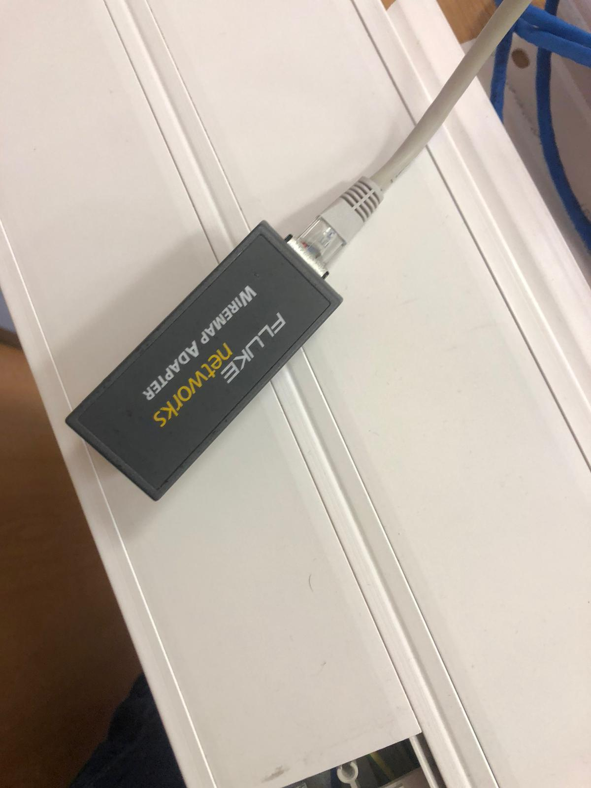
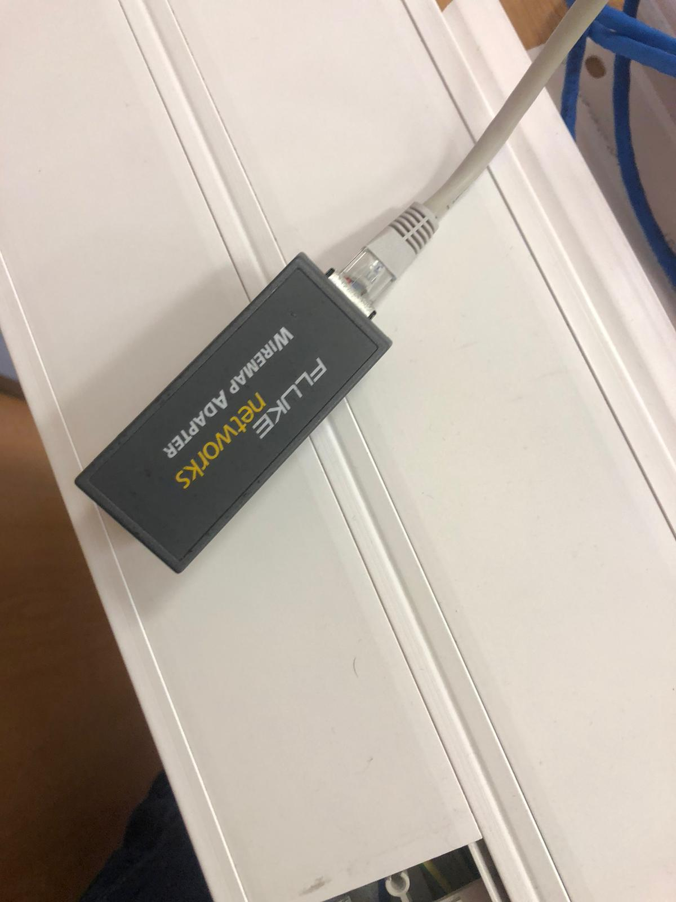

Dia 5
La primera hora configuramos la impresora por cable directo usb. Para ello lo primero es
conectar el portatil a la impresora para que el ordenador la reconozca.
Despues descargamos los drivers de la impresora (en las imágenes se puede observar el procedimiento)
descargamos el instalador y seguimos los pasos que marcaba,
una vez finalizado desconectamos el usb para acabar la instalación correctamentprocedimos a imprimir una
hoja para probar que funcionaba.
La segunda hora configuramos por recursos compartidos el switch con el portatil, para saber que funciona
hicimos ping entre los portatiles de la red local.
Para configurar recursos compartidos tenemos que ir a configuracion, red, centro de redes y recursos
compartidos
y finalmente cambiar configuración de recursos compartidos avanzado.
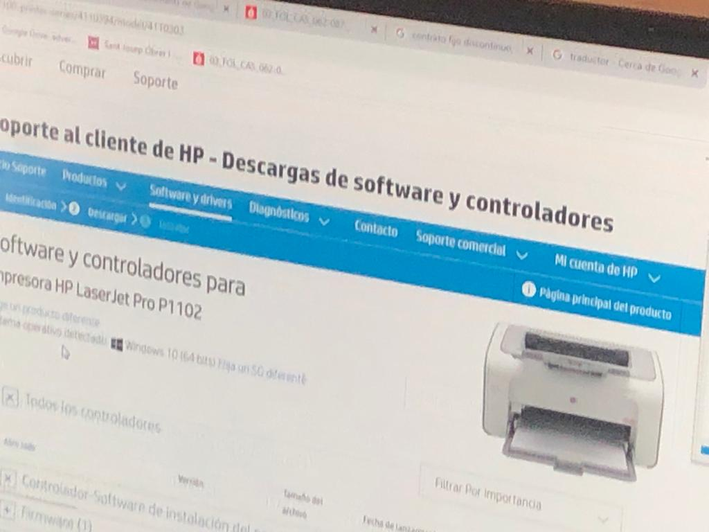


 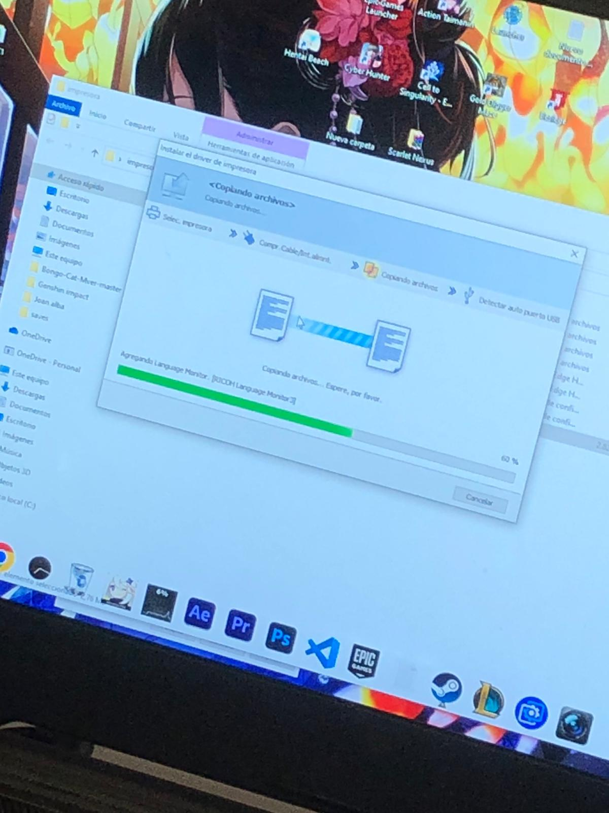
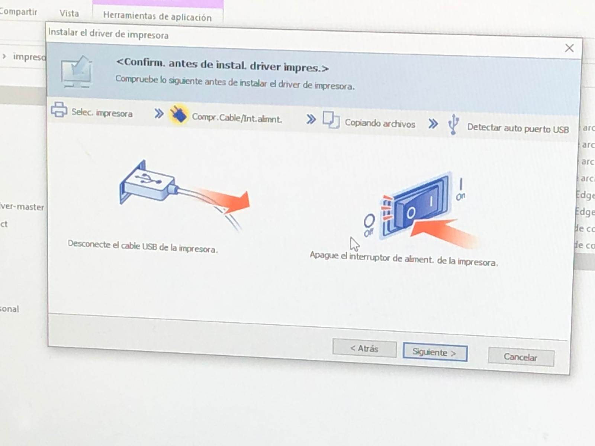
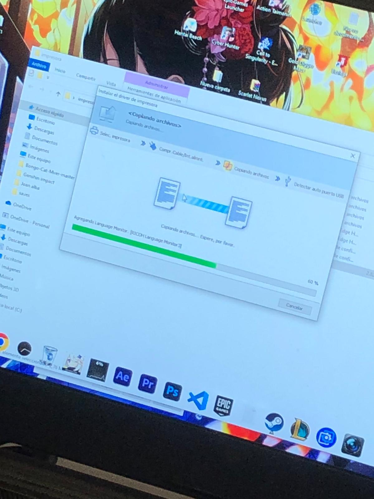
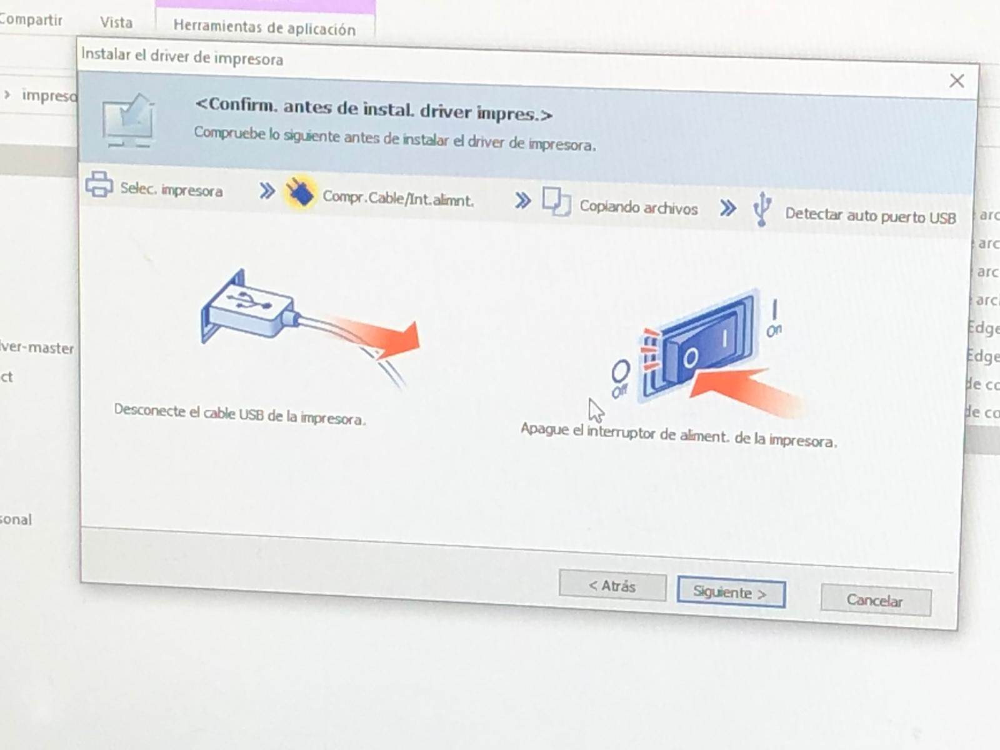


Dia 6
Configuramos el Switch y el AP primero conectamos todos los cables en el AP, despues con
nuestro RJ45 conectamos
un
ordenador a la roseta despues fuimos al navegador web de nuestro dispositivo y pusimos la ip predefinida
que ponia
en el
manual. Cuanto estuvimos dentro pudimos configurar
varios parámetros como crear una VLAN, despues el AP lo
conectamos a el Switch y poniendo su ip y el usuario y contraseña predefinidos en el navegador entramos
y pudimos
configurar el DHCP y la
conexión wireless.


Dia 7
Conectamos el router al switch y nuestro portatil a la roseta, despues desde nuestro
navegador pusimos la ip predefinida que
venia en el manual, le configuramos la ip , la dns y el resto de cosas necesarias. (Aviso: DESACTIVAR EL
ANTIVIRUS)

 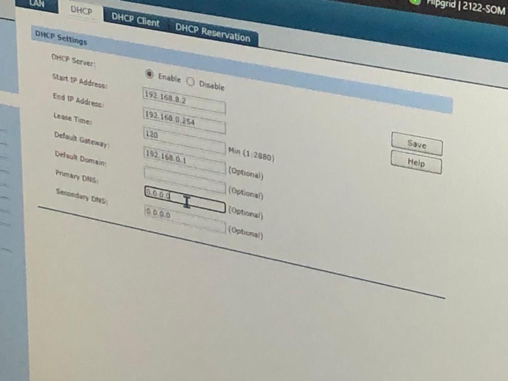
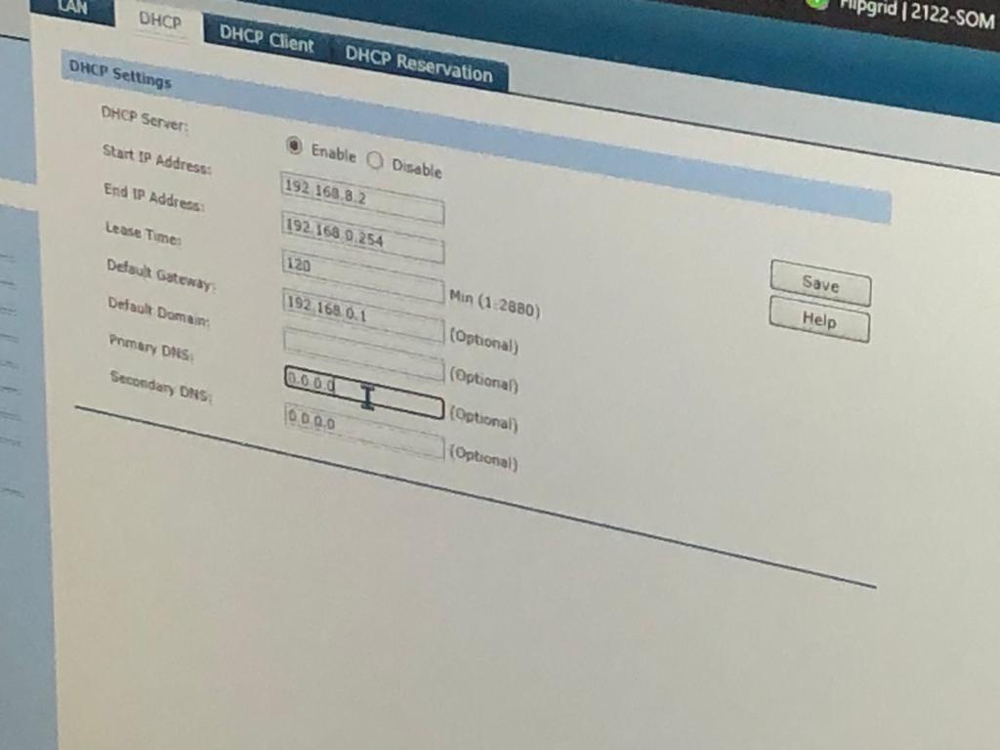
Dias 8-12
Programacion web


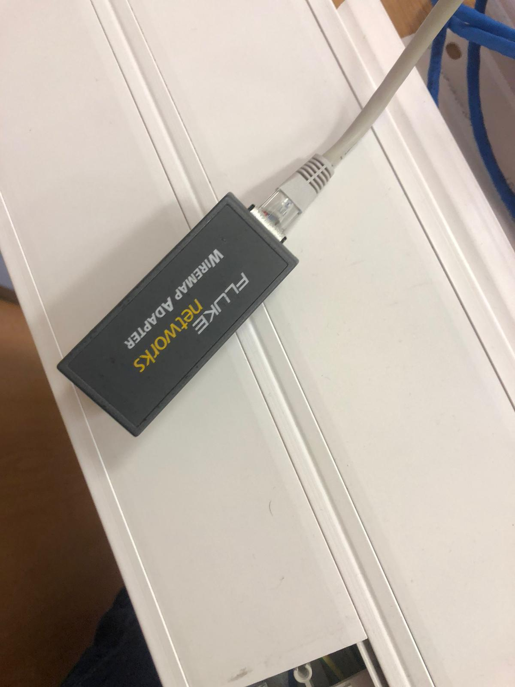
Despues descargamos los drivers de la impresora (en las imágenes se puede observar el procedimiento) descargamos el instalador y seguimos los pasos que marcaba,
una vez finalizado desconectamos el usb para acabar la instalación correctamentprocedimos a imprimir una hoja para probar que funcionaba.
La segunda hora configuramos por recursos compartidos el switch con el portatil, para saber que funciona hicimos ping entre los portatiles de la red local.
Para configurar recursos compartidos tenemos que ir a configuracion, red, centro de redes y recursos compartidos
y finalmente cambiar configuración de recursos compartidos avanzado.
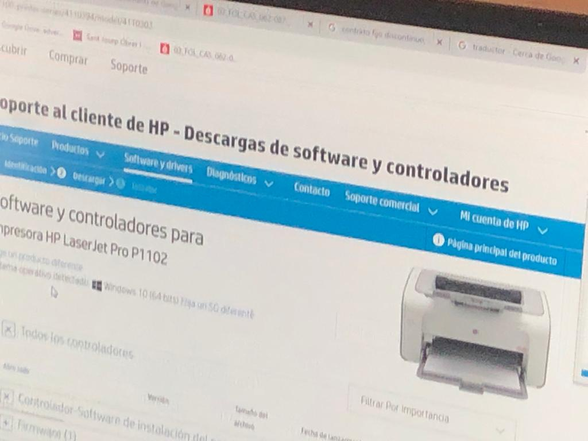
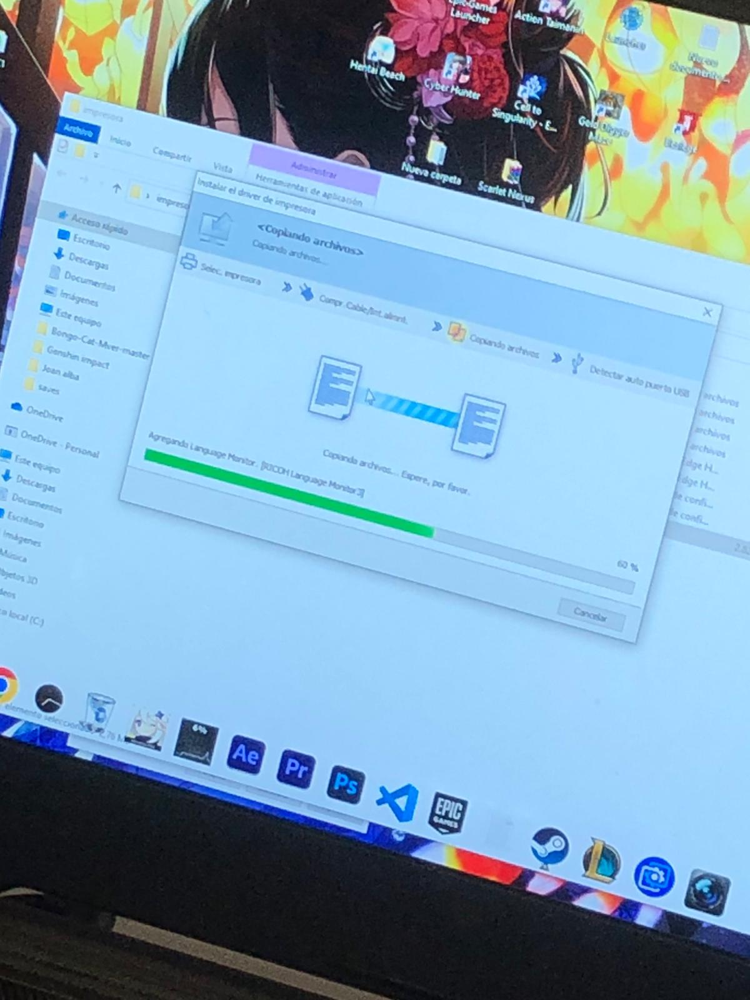
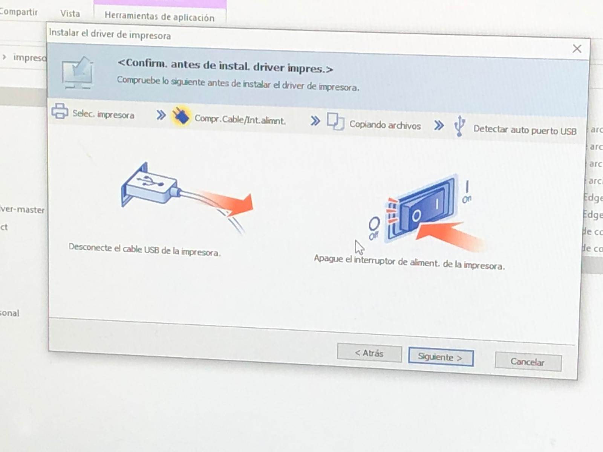
un ordenador a la roseta despues fuimos al navegador web de nuestro dispositivo y pusimos la ip predefinida que ponia
en el manual. Cuanto estuvimos dentro pudimos configurar varios parámetros como crear una VLAN, despues el AP lo
conectamos a el Switch y poniendo su ip y el usuario y contraseña predefinidos en el navegador entramos y pudimos
configurar el DHCP y la conexión wireless.
venia en el manual, le configuramos la ip , la dns y el resto de cosas necesarias. (Aviso: DESACTIVAR EL ANTIVIRUS)
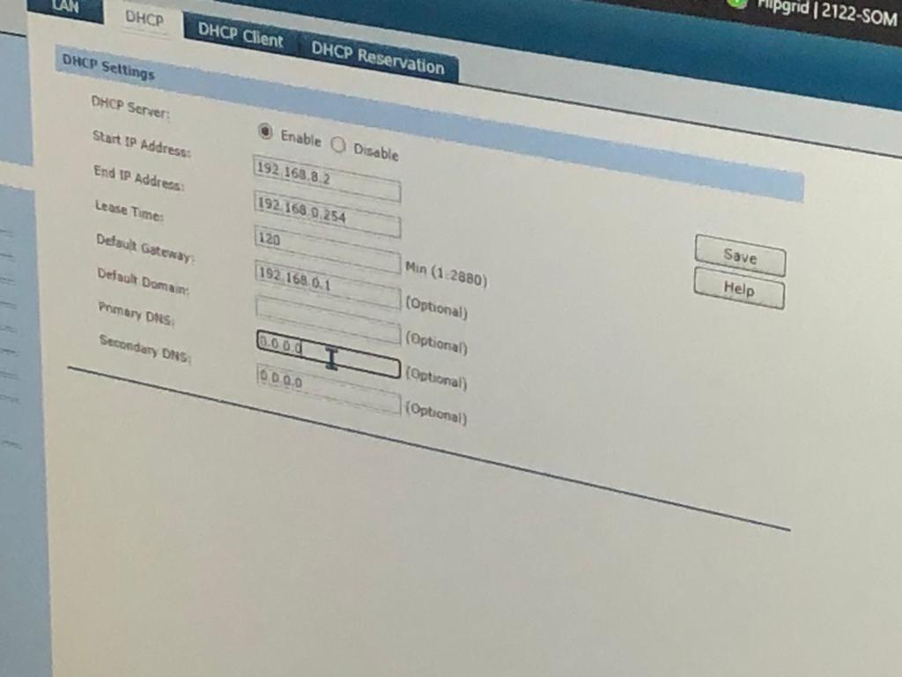